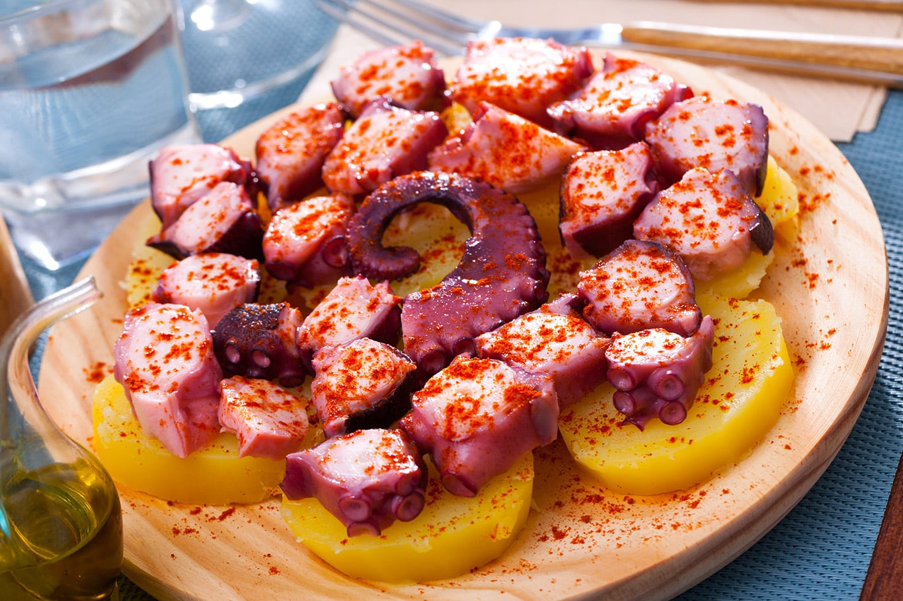
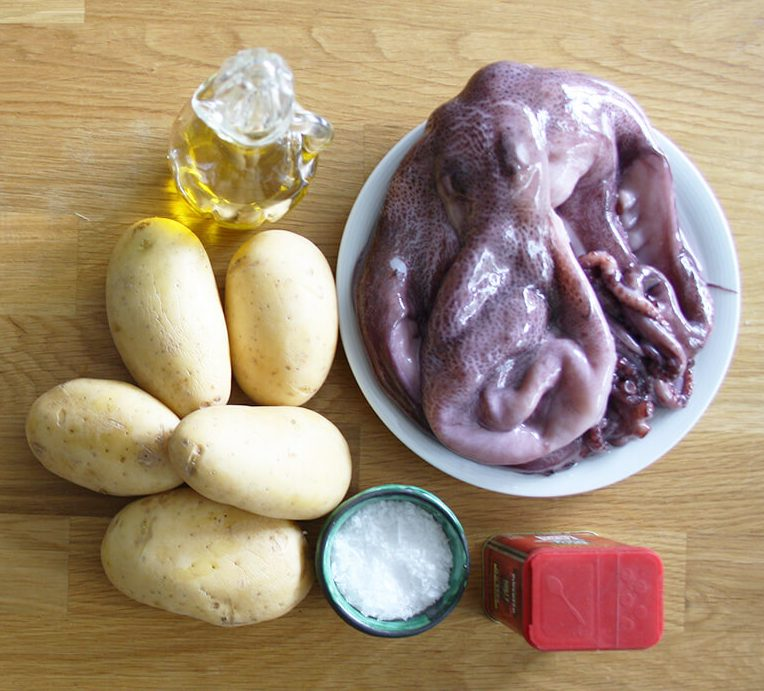

Pulpo a la Gallega
Cuando hablamos de Pulpo a la Gallega estamos hablando de Galicia y su gastronomía. Se trata de un plato capaz de transportarte a las casas y pulperías de nuestra querida tierra. Aunque su preparación se haya extendido a lo ancho y largo del país, y es que no hay paladar que se resista a su exquisito sabor, es en Galicia donde su elaboración se remonta a los años en los que se debía secar el pulpo (al igual que se seca el bacalao) para poder transportarlo y conservarlo sin que corriera el riesgo de ponerse en mal estado.

Ingredientes

- Un pulpo de 2 a 3 kg.
- Patatas gallegas 1 kg.
- Pimentón dulce o picante al gusto.
- Aceite de oliva virgen extra.
- Sal gruesa al gusto.
- Agua.
Preparación
- Es muy importante ablandar el pulpo antes de cocinarlo, he visto como lo hacían golpeándolo contra la piedra en la Isla de Ons. Pero por suerte si lo congelamos el resultado es prácticamente el mismo. Ayuda a que la carne quede más tierna. Así que lo único que debemos hacer es congelarlo si lo hemos comprado fresco o comprarlo directamente congelado.
- Sacamos el pulpo un día antes del congelador y lo pasamos al frigorífico para que se descongele. Es importante hacerlo en una cazuela o un bol grande pues va a soltar mucho líquido y puede desbordar.
- A la hora de cocinar lo pasamos un poco por agua fría para quitar posibles impurezas.
- Ponemos una cazuela (la más grande que tengamos) al fuego con agua, no añadimos sal pues el pulpo se sala al final, en la presentación.
- Cuando rompa a hervir añadimos el pulpo, lo cogemos por la cabeza y «lo asustamos», esta técnica consiste en meter y sacar el pulpo 3 veces de la cazuela para conseguir que el pulpo se quede tieso y no se le caiga la piel durante la cocción.
- Cocemos el pulpo durante unos 35-40 a fuego medio dependiendo del tamaño (lo normal es cocer un pulpo de 1,8 kg a 2 kg, con 30-35 es suficiente). En este caso, era un pulpo de 3 kilos, con lo que tuvimos que cocerlo desde que empezó a hervir unos 40 minutos.
- Hay que pincharlo de vez en cuando para ver como está de duro. La primera vez que lo cocinéis os costará cogerle el punto pero luego os saldrá de perlas.
Preparación de las patatas y emplatado del pulpo
- Mientras está cociendo, pelamos, lavamos y troceamos las patatas a la mitad. Reservamos.
- Cuando acabemos de cocer el pulpo lo dejamos reposar unos minutos y luego lo sacamos a una fuente. En la misma agua echamos las patatas y cocemos durante 15 minutos.
- Si no quieres que cojan el color rosado puedes hacerlas en otra cazuela. Eso depende de cada uno, a mí me gustan con el sabor al pulpo.
- Cortamos el pulpo con unas tijeras de cocina, las patas en trozos de 1 cm de grosor y la cabeza en trozos pequeños.
- Lo servimos en plato de madera con una base de patatas.
- Salamos con sal gorda, espolvoreamos con el pimentón (picante o dulce) y rociamos con un poco de aceite de oliva virgen extra. A mí me gusta aliñarlo también con un poco de agua de la cocción.
Información Nutricional
- Una porción:
- Aprox 654 g
- Calorías:
- 576 kcal
- Grasas:
- 9,2 g
- Carbohidratos:
- 60,1 g
- Proteínas:
- 60,8 g